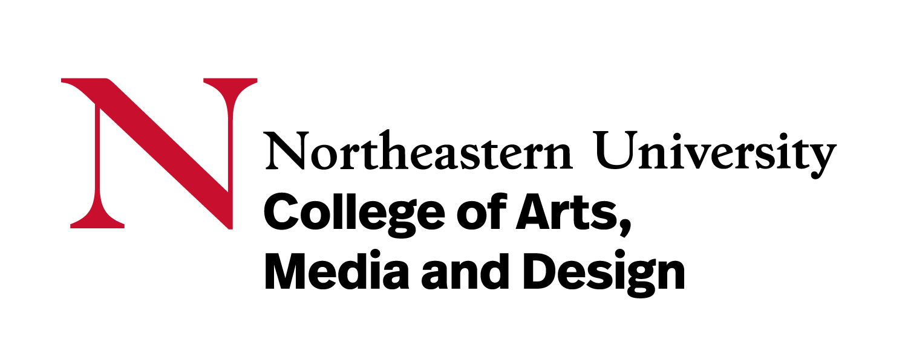
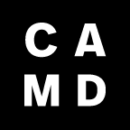
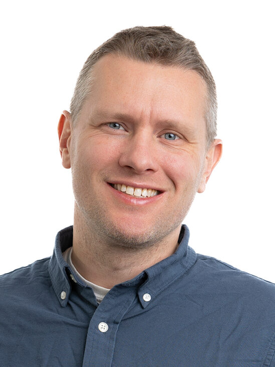
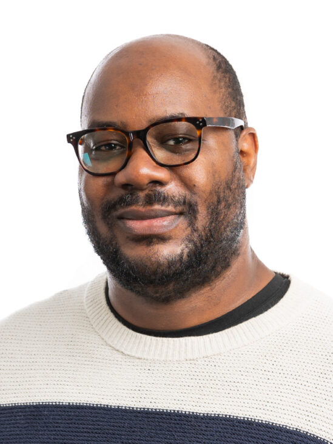
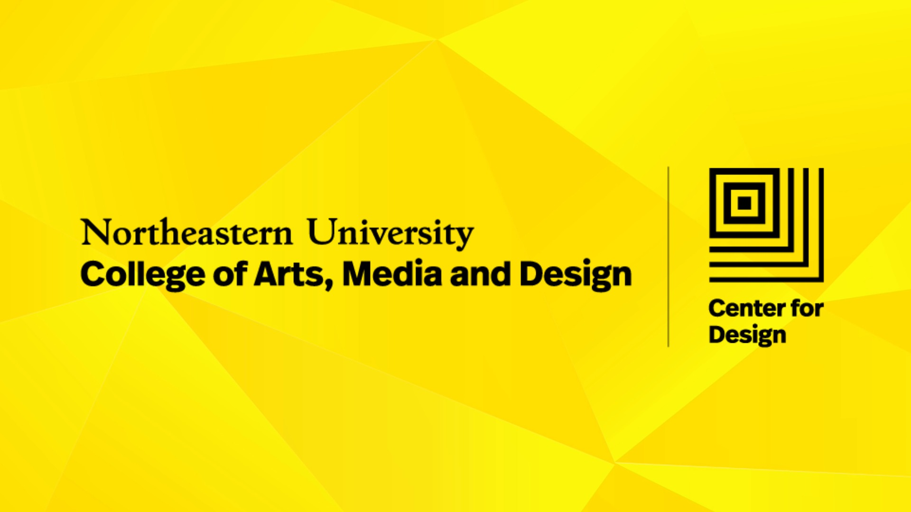
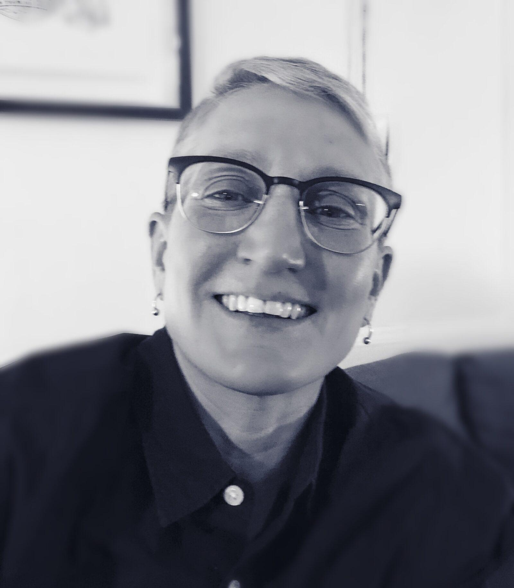
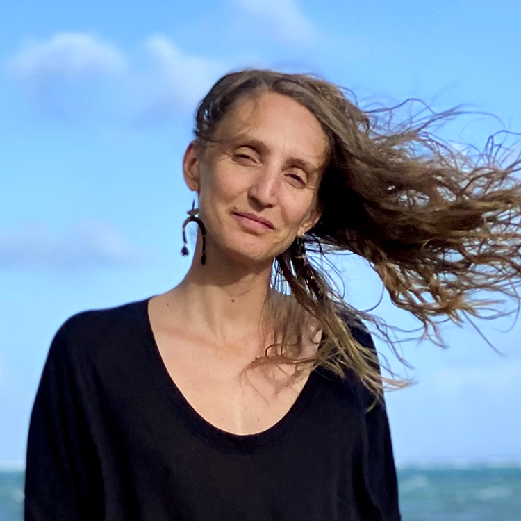

Interdisciplinary Design
and Media PhD
Prospective Student Information Session


Welcome

Professor Casper Harteveld
Associate Dean, Graduate Programs
Director, PhD Program
Ghost Lab
Professor of Game Design and PhD Program Director, researching games for decision-making and societal impact across multiple disciplines.

David Dawson II
Associate Director, PhD Programs
Associate Director for PhD programs, supporting doctoral students as early career colleagues navigating their professional development.
Program Overview
The PhD is designed for entrepreneurial self-starters who seek to break ground and invent new fields through hybrid and integrated approaches to knowledge creation.

Centers for Interdisciplinary Research

Learning laboratory for interdisciplinary exhibitions and creative research

Collaborative space for addressing grand challenges through design thinking

Community-engaged research challenging inequalities through emerging media
Recent Graduates - Dissertations

Jules Rochielle Sievert
Transformative Transdisciplinary Legal Design

Skye Moret
Constructing a continent: the Antarctic experience in context
Program Progression
| Track | Credit Requirement | Funding Source | Deadline |
|---|---|---|---|
| Regular | 48 SH | 2 years faculty RA 3 years college TA |
n/a |
| Advanced | 28 SH | 2 years faculty RA 3 years college TA |
April 1 |
| Experiential | 48 or 28 SH Eligible for Advanced |
Covered by employer or external organization |
April 1 (Advanced) |
PhD Milestones
Qualifying Exam
Written literature review + oral exam testing expertise in your research fields
Proposal Defense
Present detailed research plan to CAMD community; last step before candidacy
PhD Candidacy
Achieved after completing coursework, passing qualifying exam, and defending proposal
Dissertation Defense
Final defense open to Northeastern community; can include exhibitions, performances, artifacts
Funding
5 years guaranteed funding | 20 hours/week average
| Year | Assistantship Type | Expectations |
|---|---|---|
| 1-2 | Research Assistantship | Support faculty research and learn how to develop as an individual researcher |
| 3-5 | Teaching Assistantship | Learn how teaching works at Northeastern and how to communicate expertise to others |
Opportunities and Support
Professional Development
- $1,000 annually for conferences, workshops, and professional associations
- Up to $500 matching travel funds for research presentations
- University-issued computer
Research Support
- LEADERs Program: Industry and professional experience through embedded research partnerships
- Media Studios Organization: Equipment for VR/AR, physical making, games library, recording/photography
Fellowship Opportunities
- Searchable database of internal and external funding through PhD Network
International Student Support
- Immigration and visa support
- Academic skills advising
- Global Student Mentor Program
- Legal resources
Commonly Asked Questions
Should I reach out to faculty?
Yes! Contact faculty before applying. A list of recruiting faculty is available on the program website.
What's expected for letters of recommendation?
Three letters required. References submit directly through the online portal using their email addresses.
How can I waive the English proficiency requirement?
Submit documentation of a bachelor's or master's degree from an institution where English is the only language of instruction.
What should I put in my portfolio?
Minimum 3 work samples (5+ recommended). Include publications, writing samples, portfolio pieces, or reels.
Recruitment Process
December 1
Application deadline (no late materials accepted, including letters)
December
Faculty review applications
January
Shortlist confirmed, invitations to Virtual Meet & Greet sent
February 5
Virtual Meet & Greet
Early March
Admissions decisions sent
April 15
Acceptance confirmation deadline
Last Year: ~180 applications, 17 accepted
Thank You!
Application Fee Waiver Code
CAMDApp2026
All materials must be submitted by December 1
Questions?
d.dawson@northeastern.edu